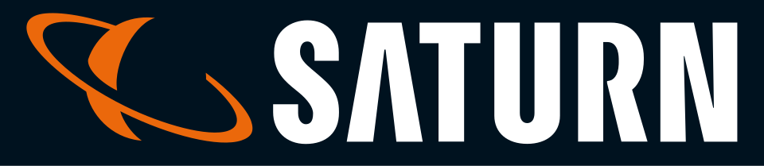
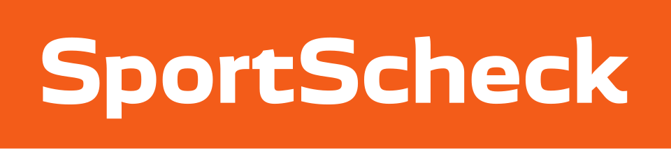

홈 > 브랜드 매거진 > Saturn
Saturn
자툰(Saturn)은 1961년 독일 쾰른에서 시작된 가전·전자제품 양판점 체인이다.
산업 분야 리테일·커머스 · 공개 등급 자료 기반 · 브랜드 평가 4.1 ★

한눈에 보는 브랜드
자투른(Saturn)은 독일을 대표하는 가전·전자제품 소매 체인으로, 1961년 쾰른에서 프리츠 바펜슈미트가 사진기와 하이파이 기기를 다루는 작은 매장으로 출발했다. 정가 카르텔이 지배하던 시대에 할인 가격과 입소문 전략으로 급성장했고, 1990년 경쟁사 미디어마르크트에 인수되며 거대 양대 브랜드 체제로 묶였다.
이후 메트로 그룹 산하를 거쳐 2017년 분리된 세코노미(Ceconomy)의 소비자가전 부문에 속한다. 본사는 잉골슈타트에 있으며, 두 브랜드를 합친 그룹은 유럽 전역에서 1천 개가 넘는 매장과 온라인을 운영한다.
브랜드 관점
자투른의 본질은 가격 파괴를 무기로 한 대형 양판점 모델이지만, 진짜 흥미로운 지점은 미디어마르크트와의 자매 관계다. 두 브랜드는 한 지주회사 안에서 형제처럼 경쟁하며 시장을 양분해 왔으나, 최근 모회사는 소비자가 둘을 구별할 이유가 줄었다고 판단해 자투른 매장을 미디어마르크트로 빠르게 전환하고 있다.
독일 내 자투른 점포는 한때 약 150개에서 2024년 가을 87개, 2025년 가을 약 65개로 줄었고 미디어마르크트는 300개를 넘어섰다. 동시에 그룹은 매출의 4분의 1 이상을 온라인에서 내며 옴니채널 서비스 기업으로의 전환을 선언했다.
한국 독자에게 이 사례는 의미가 깊다. 쿠팡과 네이버, 대형 가전 양판점이 부딪치는 한국 시장과 마찬가지로, 오프라인 강자가 아마존 같은 이커머스에 맞서 점포망을 어떻게 재편하고 디지털과 결합하는지 보여주는 살아 있는 교과서이기 때문이다.
2025년 중국 JD닷컴이 모회사 인수에 합의한 점도 글로벌 유통 재편의 신호로 읽힌다.
시작과 성장
자투른이 태어난 1961년의 서독은 라인강의 기적으로 불리는 고도성장기였고, 가전제품은 중산층의 욕망을 상징하는 품목이었다. 다만 당시 독일 전자 유통은 제조사가 정한 정가를 따르는 관행이 강했다.
창업자 바펜슈미트는 이 틀을 깨고 쾰른의 약 120제곱미터 매장에서 사진·음향 기기를 파격가에 내놓으며 광고 대신 입소문으로 손님을 끌었고, 매출은 초기 수십 년간 거듭 배로 불었다. 첫 번째 전환점은 1990년 미디어마르크트의 인수로, 독립 할인점이 거대 유통 진영의 핵심 자산으로 편입된 순간이다.
두 번째 전환점은 메트로 그룹 체제를 거쳐 2017년 세코노미로 분리 상장된 일로, 가전 유통이 독자 사업으로 재정의됐다. 확장기에는 함부르크에 약 1만8천 제곱미터, 여섯 개 층 규모의 유럽 최대급 전자제품 매장을 세우며 대형 점포 전략의 상징을 만들었다.
브랜드 아이덴티티
자투른의 핵심 가치는 누구나 부담 없이 첨단 기술을 누리게 한다는 대중적 접근성이다. 2002년 광고대행사 융 폰 마트가 만든 슬로건 '인색함은 멋지다(Geiz ist geil)'는 가격을 최우선에 둔 독일 소비 심리를 절묘하게 포착해 사회적 논쟁까지 일으켰고, 브랜드를 시대정신의 아이콘으로 끌어올렸다.
비주얼 아이덴티티는 강렬한 단색 기조와 굵은 로고 타이포그래피, 매장 곳곳의 가격 강조 그래픽으로 직관적이고 떠들썩한 인상을 준다. 타깃은 합리적 가격을 좇는 폭넓은 일반 소비자이며, 보이스는 위트 있고 도발적이며 자신만만한 톤이다.
이후 '비싼 건 싫다', '기술은 이래야지' 같은 메시지로 변주되며 가격과 기술 자신감이라는 두 축을 유지해 왔다.
제품과 서비스
자투른은 텔레비전과 오디오, 컴퓨터와 노트북, 스마트폰과 통신기기, 주방·생활 가전, 카메라와 영상장비, 게임과 스마트홈에 이르는 소비자 전자제품 전 범주를 취급하며, 취급 품목은 30만 종을 넘는다. 매장 포맷은 약 2천에서 1만 제곱미터에 이르는 대형 양판 매장이 중심이다.
채널은 오프라인 점포와 온라인 몰을 결합한 옴니채널 구조로, 온라인 주문 상품을 가까운 매장에서 무료로 찾는 방식이 대표적이다.
현재 상태
본사는 독일 잉골슈타트에 있으며, 자투른은 미디어마르크트와 함께 미디어자투른 지주회사를 이루고 모회사는 세코노미(Ceconomy)다. 그룹의 가전 부문은 유럽 11개국 이상에서 영업하며 다수 국가에서 시장 1~2위를 차지한다.
그룹 매출은 2023/24 회계연도 기준 약 224억 유로다. 2025년 중국 JD닷컴이 약 22억 유로에 모회사 인수에 합의했다고 알려졌다.
자투른 단일 브랜드의 별도 매출은 미공개다.
타임라인
정리된 연도형 이벤트가 없습니다.
BI/CI 변천사
함께 읽을 브랜드
 리테일·커머스 · 자료 기반쿠팡
리테일·커머스 · 자료 기반쿠팡쿠팡(Coupang)은 한국을 대표하는 이커머스 기업으로, 인터브랜드 2025 베스트 코리아 브랜드에서 처음으로 Top 10(10위)에 진입했다.
아마존은 쇼핑몰보다 고객의 기다림과 탐색 비용을 줄이는 시스템 브랜드에 가깝다. 상품 범위, 검색, 추천, 배송, 결제 경험이 하나로 연결되면서 브랜드의 가치는 편리...

리테일·커머스 · 자료 기반SportScheck스포트체크(SportScheck)는 1946년 오토 셰크가 독일 뮌헨에서 설립한 스포츠용품 소매 체인이다. 의류·신발·장비를 아우르는 독일의 대표 옴니채널 스포츠 소...
Fl
Flaum
리테일·커머스 · 편집 검수FlaumFlaum는 2025년에 기록된 Shoppy Shop Brands 계열의 브랜드 아이덴티티 사례입니다. M/OTG가 아이덴티티 작업의 디자이너로 기록되어 있습니다....
리테일·커머스 · 자료 기반Unieuro우니에우로(Unieuro)는 이탈리아의 가전·전자제품 양판점 체인으로 현재 Fnac Darty 그룹에 속한다.
Be
Best of the Bone
리테일·커머스 · 편집 검수Best of the BoneBest of the Bone는 2025년에 기록된 Shoppy Shop Brands 계열의 브랜드 아이덴티티 사례입니다. Universal Favourite가 아이...
Ko
Korshags
리테일·커머스 · 편집 검수KorshagsKorshags는 2025년에 기록된 Shoppy Shop Brands 계열의 브랜드 아이덴티티 사례입니다. Pond가 아이덴티티 작업의 디자이너로 기록되어 있습니다...
Lo
Lolo
리테일·커머스 · 편집 검수LoloLolo는 2024년에 기록된 Shoppy Shop Brands 계열의 브랜드 아이덴티티 사례입니다. Odds Studio가 아이덴티티 작업의 디자이너로 기록되어 있...